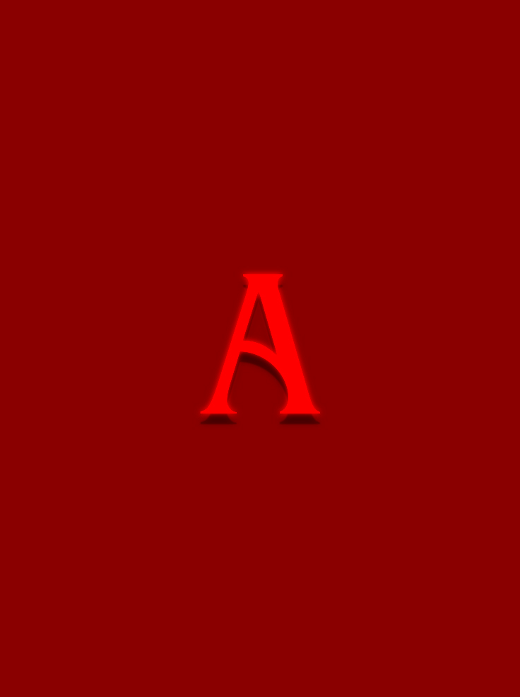

Projeto Apocalipse
Este projeto foi desenvolvido como designer gráfico no Projeto Apocalipse, explorando conceitos artísticos, narrativos e integrando uma solução web simples para engajar o público.
Sobre este projeto
Para o Projeto Apocalipse, criei uma composição gráfica que explorava elementos visuais marcantes inspirados em temas de transformação e renascimento. Este trabalho foi uma oportunidade para experimentar com técnicas de design, incluindo o uso de cores vibrantes e efeitos de sobreposição, que refletem a intensidade e o simbolismo do tema.
Além do design gráfico, desenvolvi um site, que incluía uma contagem regressiva para a data do evento. Esta funcionalidade buscava criar expectativa e engajar o público, adicionando um elemento interativo ao projeto.
O pôster foi concebido para comunicar uma narrativa visual imersiva, trazendo à tona a dualidade entre caos e esperança, temas centrais ao projeto. O design também foi pensado para engajar o público e despertar a curiosidade sobre o universo criativo do Apocalipse.


Veja o próximo trabalho: